aquaria/aquariums
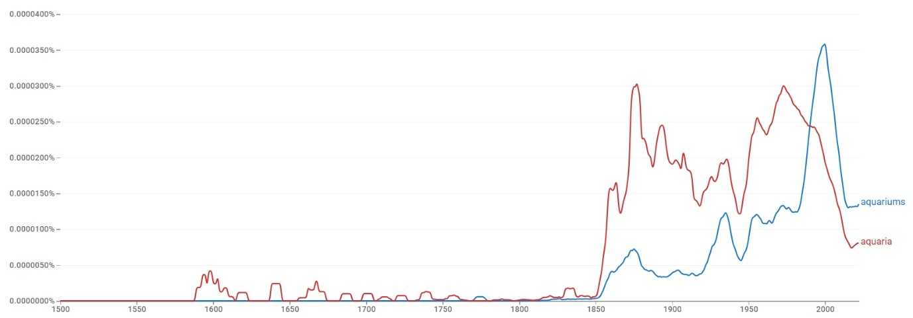
결론
aquariums와 aquaria는 ‘수조·수족관’이라는 동일 의미 영역을 공유하지만, 시간이 지나며 중심 형태와 사용 환경이 분명히 달라진다. 초기에는 고전형 aquaria가 자연사·연구·공공 전시의 문어적·전문적 맥락에서 우세했으나, 20세기 중후반 이후 가정 취미·소비재·대형 공공 수족관·관광 담화가 확대되며 규칙형 aquariums가 더 넓은 기반을 확보한다. aquaria는 실험·사육 관리·기관 운영의 전문 맥락에 제한적으로 남는다. 따라서 초기 고전형 우세 공존 → 우세 전환 → register 분화의 구조다.
연구 결과
과정 및 결론 도달 과정 · 사용 도구
1차 Ngram 사용량 그래프로 초기 고전형 우세와 2000년대 전후 규칙형 추월을, 2차 같은 그래프로 교차·우세 전환을 통한 공존 경로를 읽었다. 3차는 Ngram 연어(public/family/home/reef vs experimental/laboratory/control)와 COCA 맥락 분석(공공 전시·취미·소비재 vs 실험·연구·기관 운영, 고유명사 용법 포함)으로 레지스터 분화를 해석했다.
세부 정보 · 구간 별 분절
초기에는 두 형태 모두 거의 쓰이지 않으나, 19세기 후반 이후 고전형 aquaria가 먼저 증가해 20세기 전반까지 더 높은 사용량을 유지한다. 규칙형 aquariums는 19세기 후반부터 서서히 나타나 20세기 중반까지 대체로 낮다가, 1980년대 이후 상승세가 뚜렷해지고 2000년대 전후 aquaria를 추월한다. 현재 사용량의 중심은 규칙형 aquariums 쪽으로 이동했다.
한 형태가 단기간에 대체한 것이 아니라, 초기 고전형 우세에서 출발해 규칙형이 사용 기반을 넓히며 교차·우세 전환되어 공존하는 경로다.
aquariums는 public/large/family 및 home/saltwater/reef/community와 결합해 가정용·취미·전시·소비재와, aquaria는 marine/experimental/separate/aerated 및 laboratory/control/test/filter와 결합해 연구·관리·제도적 사육 환경과 연결된다. COCA에서 aquariums는 공공 전시 시설·가정 취미·연구 환경·보전 교육·대중문화에 폭넓게, aquaria는 실험·연구·사육 통제·기관 운영의 문어적 맥락에 분포하되 게임 제목 등 고유명사 용법이 섞인다. 규칙형=대중·실용, 고전형=전문·관리로 갈리는 register 분화다.
고전형 aquaria는 자연사 연구와 전시 기관의 문어적·전문적 표현으로 자리 잡았으나, 가정용 사육 취미와 상업 수족관이 확산되면서 일상적·상업적 영역에서는 규칙형 aquariums가 널리 쓰이게 되었다. 그 결과 사용량의 중심은 aquariums로 이동하되, aquaria는 연구·기관 운영의 전문 맥락에 제한적으로 남는다.
참조 이미지 · 연어 그래프와 COCA 용례
이미지를 누르면 크게 볼 수 있어요.
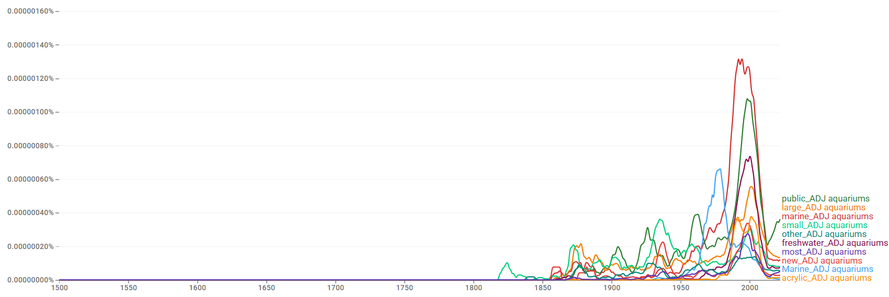
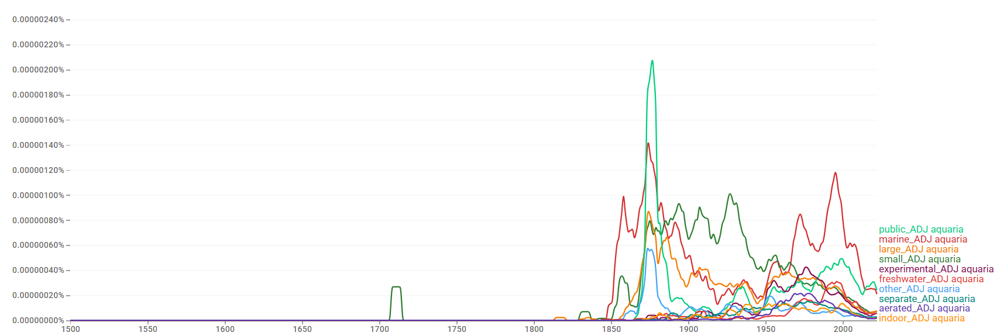
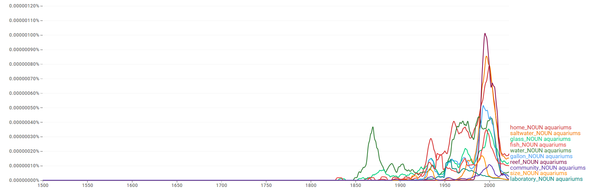
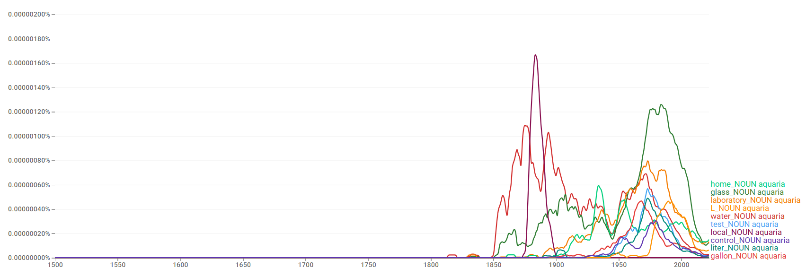
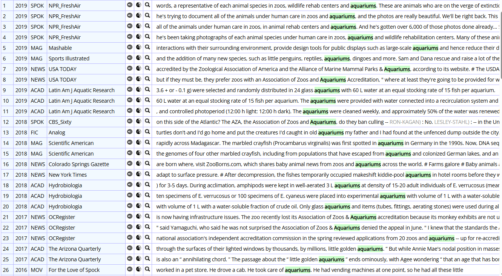
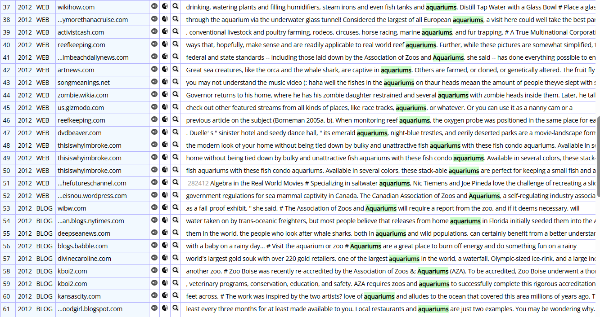
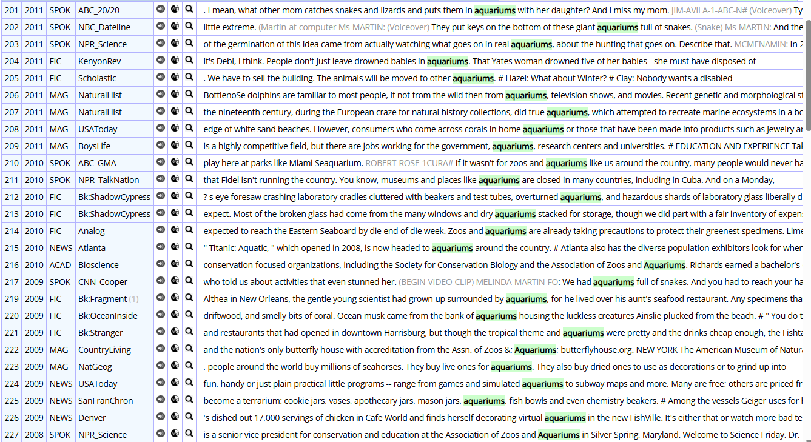
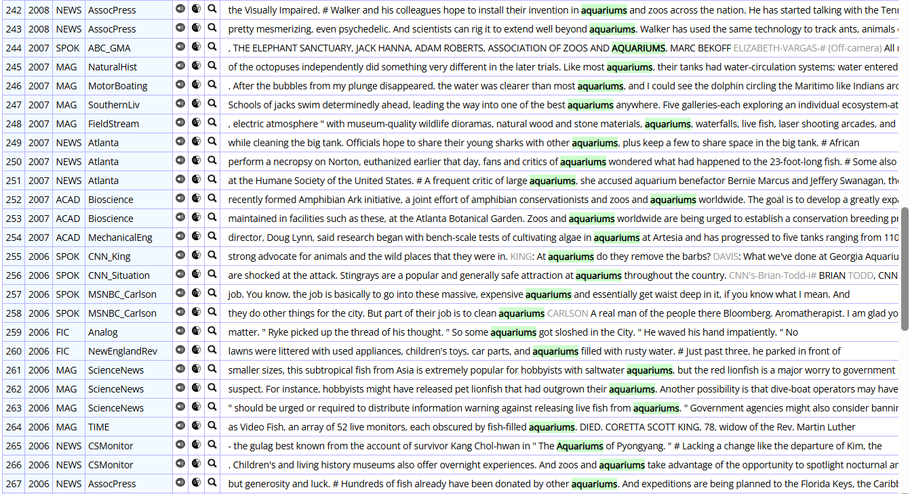
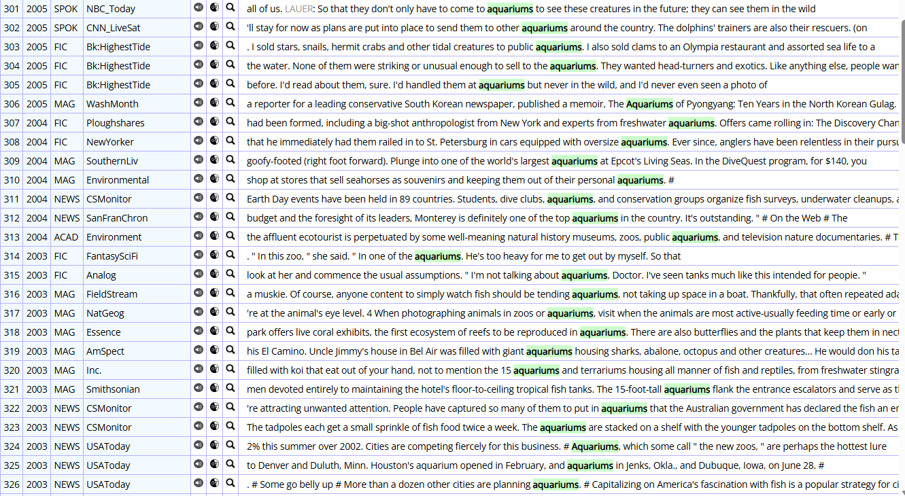
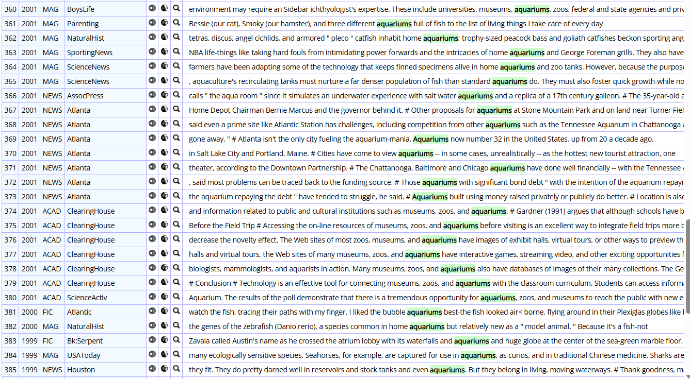
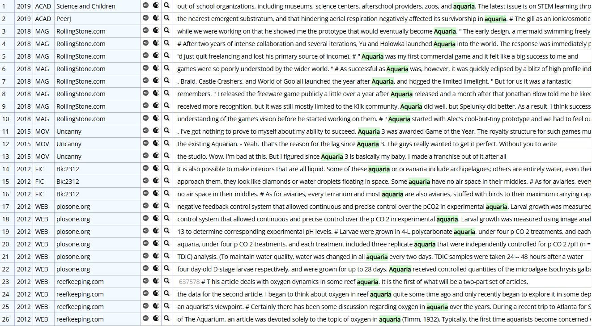
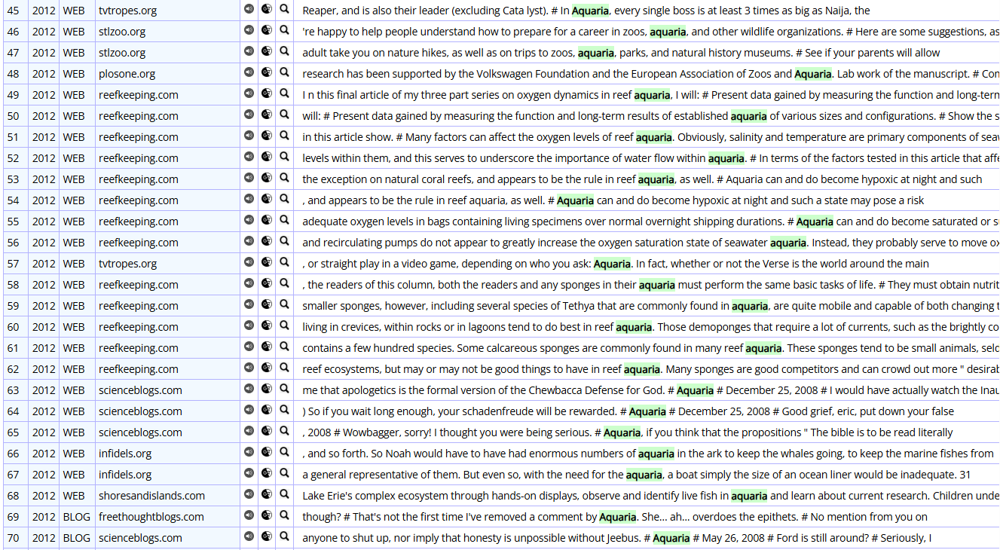
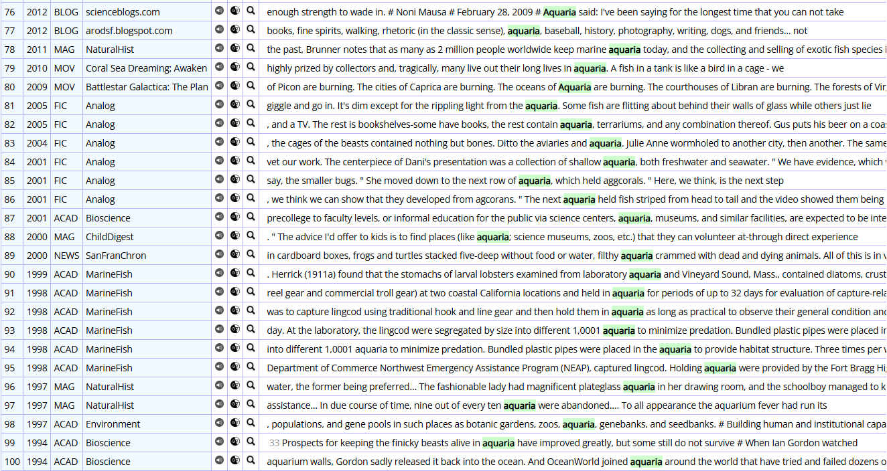
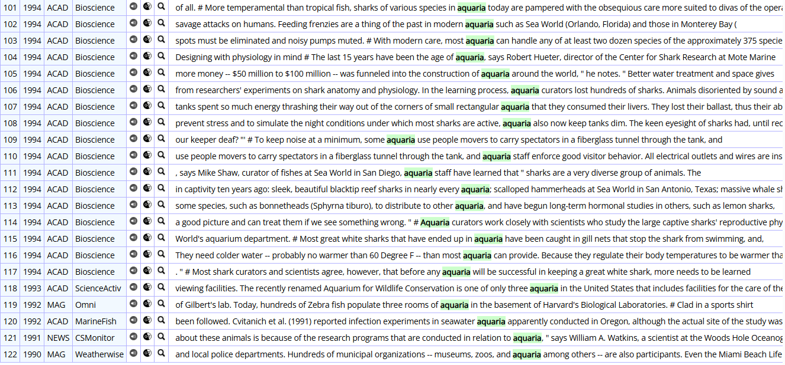